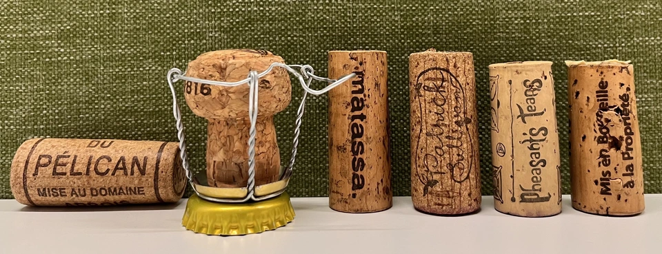
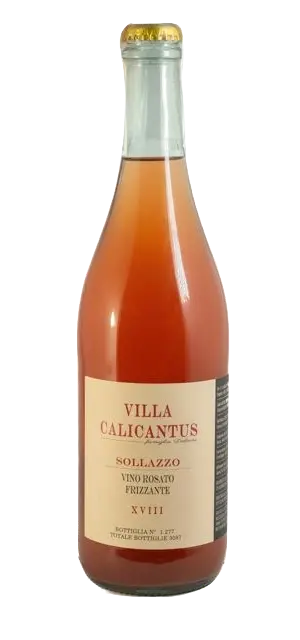
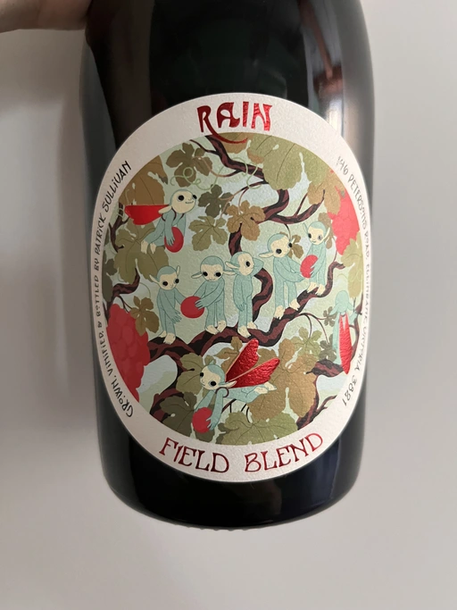
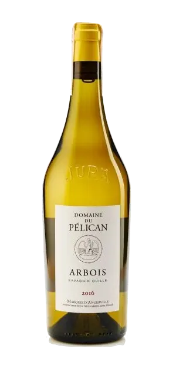
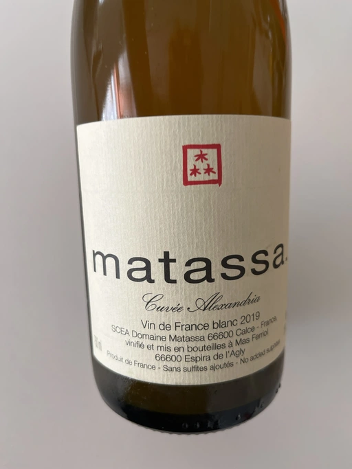
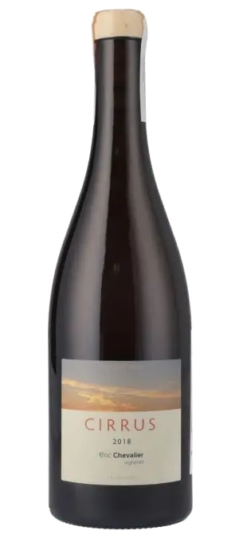
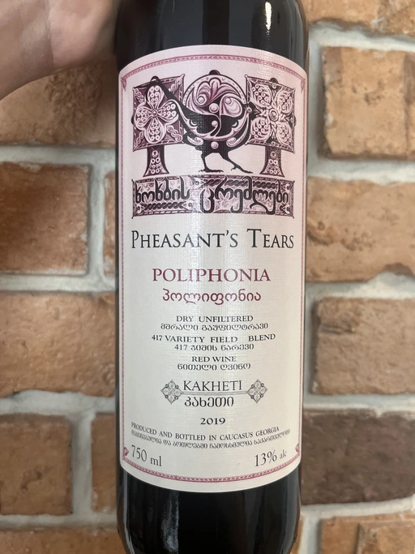
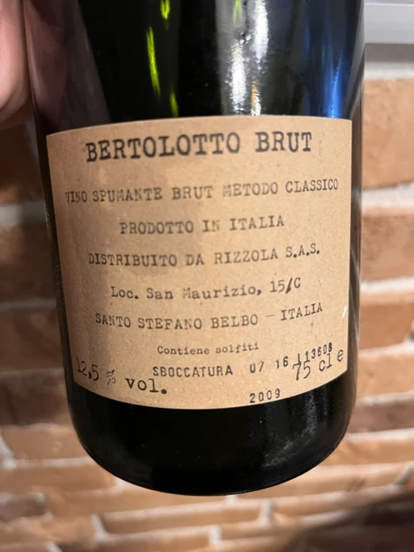

Mixed Bag Vol. 1

This time I decided to gather people for a mixed bag blind tasting. Of course, I could call it ‘WINES FROM PLANET EARTH’, but it’s not helpful at all. Right? The thing is that I have lots of wines I want to share with people. Some bottles speak in liquid poems. Others tell stories through labels and the people behind them. And you know, my backpack holds up to 12 bottles, and usually, it’s a mixed bag of tasty stuff. So let’s open it.
- Villa Calicantus Sollazzo 2018
- Patrick Sullivan Rain Field Blend 2019
- Domaine du Pélican Savagnin Ouille 2016
- Matassa Cuvée Alexandria 2019
- Éric Chevalier Cirrus 2018
- Pheasant’s Tears Poliphonia 2019
- Cascina Bertolotto Spumante Brut Metodo Classico NV
Scores
| Wine #1 | Wine #2 | Wine #3 | Wine #4 | Wine #5 | Wine #6 | Wine #7 | |
|---|---|---|---|---|---|---|---|
| Tetiana S | 3.50 | 3.00 | 3.20 | 3.70 | 3.80 | 3.50 | 3.30 |
| Dmytro S | 3.80 | 3.10 | 3.30 | 4.30 | 3.80 | 2.90 | 3.60 |
| Mariia S | 3.60 | 3.70 | 3.30 | 4.10 | 3.80 | 3.50 | 4.30 |
| Andrii S | 3.60 | 3.90 | 3.60 | 4.30 | 3.80 | 4.10 | 4.30 |
| Maksym K | 3.90 | 3.40 | 4.50 | 2.95 | 2.94 | 3.90 | 4.60 |
| Elvira K | 3.50 | 3.60 | 3.90 | 4.70 | 4.00 | 3.00 | 4.20 |
| Ivietta K | 3.00 | 4.80 | 4.60 | 4.20 | 4.80 | 4.50 | 3.20 |
| Dmytro D | 3.50 | 4.00 | 3.80 | 3.80 | 3.50 | 4.00 | 4.00 |
| Artem O | 4.00 | 3.80 | 3.20 | 4.80 | 4.20 | 3.70 | 4.50 |
| Sofiia B | 4.00 | 3.00 | 3.50 | 3.90 | 4.00 | 3.30 | 4.30 |
| Boris B | 3.60 | 4.00 | 4.20 | 4.20 | 4.00 | 3.80 | 4.10 |
| amean | sdev | favourite | outcast | price | QPR | |
|---|---|---|---|---|---|---|
| Wine #1 | 3.64 | 0.0750 | 1.00 | 3.00 | 776.00 | 1.8156 |
| Wine #2 | 3.66 | 0.2605 | 1.00 | 2.00 | 1150.00 | 1.2737 |
| Wine #3 | 3.74 | 0.2369 | 1.00 | 2.00 | 1591.00 | 1.0221 |
| Wine #4 | 4.09 | 0.2328 | 5.00 | 0.00 | 1185.00 | 2.3086 |
| Wine #5 | 3.88 | 0.1860 | 0.00 | 0.00 | 1112.00 | 1.7946 |
| Wine #6 | 3.65 | 0.2079 | 1.00 | 3.00 | 603.00 | 2.3978 |
| Wine #7 | 4.04 | 0.2005 | 2.00 | 0.00 | 825.00 | 3.0733 |
How to read this table:
ameanis arithmetic mean (and not ‘amen’), calculated as sum of all scores divided by count of scores for particular wine. It is more useful thantotal, because on some events some wines are not tasted by all participants.sdevis standard deviation. The bigger this value the more controversial the wine is, meaning that people have different opinions on this one.favouriteis amount of people who marked this wine as favourite of the event.outcastis amount of people who marked this wine as outcast of the event.priceis wine price in UAH.QPRis quality price ratio, calculated in as100 * factorial(rms)/price. The reason behind this totally unprofessional formula is simple. At some point you have to pay more and more to get a little fraction of satisfaction. Factorial used in this formula rewards scores close to the upper bound 120 times more than scores close to the lower bound.
Villa Calicantus Sollazzo 2018

- producer: Villa Calicantus
- name: Sollazzo
- vintage: 2018
- grapes: Corvina, Molinara, Rondinella, Sangiovese
- location: Veneto, Italy
- appellation: Vino
- alcohol: 12.0
- sugar: ???
- price: 776 UAH
- importer: Roots
Some people have to spend a lot of time until they find a path to their favourite craft. Daniele Delaini, a descendant of one of the largest growers of Bardolino in the past, changed several jobs until he ‘returned’ to his abandoned family estate. After a stink in banking and an attempt to sell Italian wines in Paris, he went to Villa Calicantus, which he inherited from his aunt. The name of the estate comes after her favourite flowering plant.
Daniele started with one hectare of vines around the villa. But the inherited estate was abandoned for many years, and its cellar required complete renovation. And so, in 2011, Daniele was forced to make his first vintage in a nearby garage.
Let’s be honest, Bardolino’s reputation is quite questionable. For many years many farmers and winemakers were focused on quantity over quality. This resulted in flabby, soulless, and low-quality wines destined to be consumed by unfortunate tourists. Of course, I am exaggerating, but this descent sculped the face of this region.
Villa Calicantus was not operational during the times of industrial and chemical boom that happened in this region. So the nearly forty-year gap in his family’s involvement in Bardolino played a crucial role in Daniele’s philosophy.
Our goal is to bring Bardolino back on the map of great Italian wines, through a rediscovery of the true identity of wine with enormous potential.
Today Villa Calicantus owns 8 hectares of vineyards on some of the highest sites in the appellation. As they say, exceptional wine is made in vineyards, so Daniele farmed organically since day one. In 2014 he started the conversion to biodynamics. Each wine comes from only one specific area. Each wine tells a story of a specific vintage, a specific vineyard from a specific sub-area of Bardolino.
In the cellar, nothing is added except for little doses of sulfur. Wine is fermented with indigenous grape yeasts, decanted and bottled following the lunar cycles, not filtered, and not clarified.
And you know me. I love to start every evening with a glass of sparkling wine. Sollazzo (Enjoy the sun) is a rosé sparkling made of Corvina, Rondinella, Molinara, and Sangiovese. Sounds interesting to me. Hope it does sound interesting to you!
Patrick Sullivan Rain Field Blend 2019

- producer: Patrick Sullivan
- name: Rain Field Blend
- vintage: 2019
- grapes: Cabernet Franc, Pinot Gris
- location: Gippsland, Victoria, Australia
- alcohol: 13
- sugar: 0
- price: 1150 UAH
- importer: Wine Bureau
Patrick Sullivan works with his wife Megan in Yarra Valley to produce authentic wines on their farm in the Strezleki ranges, Baw Baw Shire, Gippsland, Australia. Patrick portrays himself as a farmer and not a winemaker. His vines are pure, intriguing and honest. His labels are catchy. Don’t believe me? Just take a closer look!
I do not put myself in the category of Natural Wines. I only make wine. Natural Wine is a constructed term that I do not like very much. I make wine in the way I like it and in the style that I like to drink and I do not feel better than someone who acidifies or uses selected yeasts. I do not do it because I do not like it. I do it differently.
Patrick Sullivan
Unlike Daniele Delaini, Patrick’s path to winemaking began at a young age. Some say that at age of 12, he spent time planting vines during the school break. His personal site says that his first vinous “whiff” came whilst climbing the hills on a farm his family once owned. In any case, this initial spark developed into fascination and determination. So after finishing high school, Patrick spent two years travelling in Europe to learn winemaking techniques. His love for the craft only grew, so once he returned to his homeland, he studied botany and actuarial science. After post-graduate, Patrick wanted to learn from somebody. And so he went on to gain invaluable experience by working alongside respected winemakers (such as Stuart Proud, William Downie, Anna Martens and Eric Narioo) in various organically and biodynamically managed vineyards in Victoria.
After some time, he gained enough experience, knowledge and confidence to start own projects.
Rain Field Blend is made of 30-40 years old vines. The Cabernet Franc is fermented using carbonic maceration and the Pinot Gris is fermented on skins in stainless steel for one month. All wines are then transferred to puncheon to settle out and come together.
Domaine du Pélican Savagnin Ouillé 2016

- producer: Domaine du Pélican
- name: Savagnin Ouillé
- vintage: 2016
- grapes: Savagnin
- location: Jura, France
- appellation: Arbois AOC
- alcohol: 12.5
- sugar: ???
- price: 1591 UAH
- importer: Roots
Guillaume d’Angerville, current owner of famous Le Domaine Marquis d’Angerville from Bourgogne, decided to create a new project in Jura after tasting a single bottle - Tissot’s Chardonnay Arbois Les Bruyères 2005.
I tasted this bottle blind in a restaurant in Paris that I often go to. I always tell the sommelier to give me something blind and the only rule is that it has to be outside Burgundy. When he brought me this wine, I said, ‘You forgot the rule, you brought me a wine from Burgundy.’ And he said, ‘I am afraid you’re wrong.’
Guillaume d’Angerville
I understand that now you want to taste this wine. But unfortunately, even 2017 is not available in Ukraine anymore. Funny, Tissot’s Savagnin Arbois Vin Jaune Les Bruyeres 2012 was a candidate for this tasting, but despite being an incredible wine, it’s too expensive and quite unusual in a risky way. Though we will get a chance to get familiar with Vin Jaune style later on. Because I love it.
According to my notes, we haven’t tasted Savagnin yet. Even though we had many bottles from Jura. So, of course, we have to give it a try. This Savagnin is made in a clean and non-oxidative style just to be our entry to the new world. It could be the first step of many…
Matassa Cuvée Alexandria 2019

- producer: Matassa
- name: Cuvée Alexandria
- vintage: 2019
- grapes: Zibibbo
- location: Languedoc-Roussillon, France
- appellation: Vin de Table
- alcohol: 12.8
- sugar: 1
- price: 1185 UAH
- importer: Wine Bureau
And how could we live without macerated white wine? Matassa is a legendary producer run by three incredible people - Tom Lubbe, his wife Nathalie Gauby and Sam Harrop MW. Tom and Sam are from New Zealand, while Nathalie is from Roussillon. And Matassa is located in Roussillon… Sounds suspicious. Cherchez la femme!
Tom was born in New Zealand but grew up in South Africa. He was always interested in Mediterranean grapes, so Louise Hofmeyer helped him arrange a stage at the legendary Domaine Gauby in Calce, Roussillon. Initially, Tom planned to work there for 3 months only, but Gérard Gauby quickly befriended Tom and invited him to return for three more vintages. This is where he met his wife, Nathalie Gauby, who happens to be Gérard’s sister.
The birth of their first child made Tom reconsider moving back to South Africa, opting to stay in to start his own estate. Matassa was founded in 2003. Yet they didn’t have a cellar, so their first vintage was made in the recently married couple’s living room. Gérard felt so bad about this that he gave Tom the old Gauby cellar in 2004.
Cuvée Alexandria 2019 has three-week whole-cluster maceration with no extraction. Racked and pressed into 2500L foundres for ageing.
Éric Chevalier Cirrus 2018

- producer: Éric Chevalier
- name: Cirrus
- vintage: 2018
- grapes: Sauvignon Gris
- location: Loire, France
- appellation: Vin de Table
- alcohol: 12
- sugar: 1
- price: 1112 UAH
- importer: Roots
Sometimes people who sell wine decide to try on a new role of a vine grower or even a winemaker. Éric Chevalier was a négociant with ten years of experience when he moved to his hometown of Saint-Philbert de Grandlieu, just southwest of Nantes. Next year, in 2006, he ended up taking over the family Domaine. His father, a vigneron, had stopped working the vineyards, and Éric was faced with a difficult choice. Despite being anything but enthusiastic, he was against replanting or selling vineyards. And instead, he decided not only to continue farming the Domaine but also to produce and bottle all of the family’s result of hard work.
In 2020 Éric Chevalier acquired organic certification, a rare achievement in Loire Valley. Especially considering the difficult climate and region’s love for high yields. In addition, Éric Chevalier is one of the few people still planting and producing wines from Fié Gris.
And we continue to discover new wine grapes. This time we have a macerated Sauvignon Gris (or Fié Gris), which is a pink-coloured clonal mutation of Sauvignon Blanc. One could wonder why it has ‘Gris’ as part of its name. You might also recall Pinot Gris (commonly known as Pinot Grigio). But in reality, it’s called so according to the darker greyish fruit skin colour, in contrast to ‘Blanc’ fruit skin colour of Sauvignon Blanc. That’s right, ‘Gris’ means ‘grey’.
It’s also worth noting that wines made exclusively from Sauvignon Gris are rare, as it results in less aromatic wines and usually more smokey perfume. In addition, Cirrus have spent 3 to 4 weeks in contact with grape skin, and then was aged for 11 to 12 months on lees… Interesting, isn’t it?
Pheasant’s Tears Poliphonia 2019

- producer: Pheasant’s Tears
- name: Poliphonia
- vintage: 2019
- grapes: 417 variety field blend
- location: Kakhetia, Georgia
- alcohol: 13
- sugar: 2.79
- price: 603 UAH
- importer: Wine Bureau
After checking out my reviews of this producer, you would rightfully ask: are you trying to poison us? Wait, I haven’t tried this particular wine, but… Where is your curiosity? Did you know that it’s made of 417 indigenous Georgian grapes? Yup, that’s why it’s called Poliphonia. John Wurdeman is a wunderman man.
Pheasant’s Tears has born out of love for the land and its traditions. Sounds cliché? But John is not a local. He was born into a family of artists in Santa Fe, New Mexico. He grew up farming vegetables, looking after chickens and sculpting in wax and clay. He went on to study art professionally at the Maryland Institute College of Art in Baltimore and then completed a Master’s degree in Painting at the Surikov Institute in Moscow, Russia.
In addition to visual art, John was interested in music. According to John, when he heard Georgian polyphony for the first time on a recording in 1991, he dreamed about visiting Georgia. And once John completed his Master’s degree, John packed and moved to Georgia. He fell in love with land, culture, cuisine and a woman. Cherchez la femme! Again!
If you think about it, Georgian winemaking was on a sloppy hill because of filthy Soviets. It practically lost its identity and heritage in the form of hundreds of indigenous grapes and qvevri. Thanks to political and actual fights between Georgia and Russia, winemakers had to find a new market for their wine, which required quality improvements.
John was part of this ‘revolution’. He has a dream of preserving all indigenous grapes he can find. And to celebrate this quest’s progress, he creates Poliphonia from this curious field blend.
Cascina Bertolotto Spumante Brut Metodo Classico NV

- producer: Cascina Bertolotto
- name: Spumante Brut Metodo Classico
- vintage: 2009 (???)
- grapes: Pinot Nero, Chardonnay
- location: ???
- alcohol: 12.5
- sugar: ???
- price: 825 UAH
- importer: regno.ua
This is by far the strangest wine of the evening. No, it has nothing to do with the wine itself. The reason is conflicting and unclear information about this wine scattered over the internet. So I had to spend quite some time figuring out who was the actual producer of this wine.
Read full story behind this question in a separate post. No really, go and read it! I am waiting. Five, four, three, two, one… Alright, let’s consider that you’ve completed this little quest.
At this point, you could rightfully ask: so why this wine? Oh right! Because it’s a hidden gem. Look, I found it accidentally in a small booze shop near my house. I was looking for sparkling wines and was fighting through some mainstream and expensive Champagne bottles to see what else they have. And I found this bottle! Intriguing label with little information, classic method, and brut! I had to taste it, and it turned out to be good. That’s why we have this extra bottle today.
Conclusions
Oh well, if I need to make conclusions… Blind tastings are incredible. Setting big and smaller names and stories behind them away allows one to focus on the content of the bottle. See two extremes - Domaine du Pélican and Cascina Bertolotto. The weight of the former had no power over us, while the latter confirmed its status as a hidden gem.
Of course, there is always room for more blindness: by using opaque glassware, revealing wines only after assessing every bottle, asking someone not participating in the tasting to shuffle wines and pour them…
But we are not professionals, and let’s remember that wine is about enjoyment. Ignoring all the cons of our format and blind tastings in general, I am happy that every participant found at least one ‘that bottle’.
Safe travels!